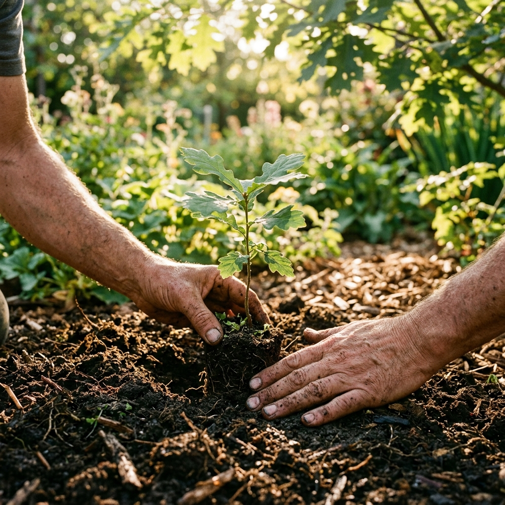
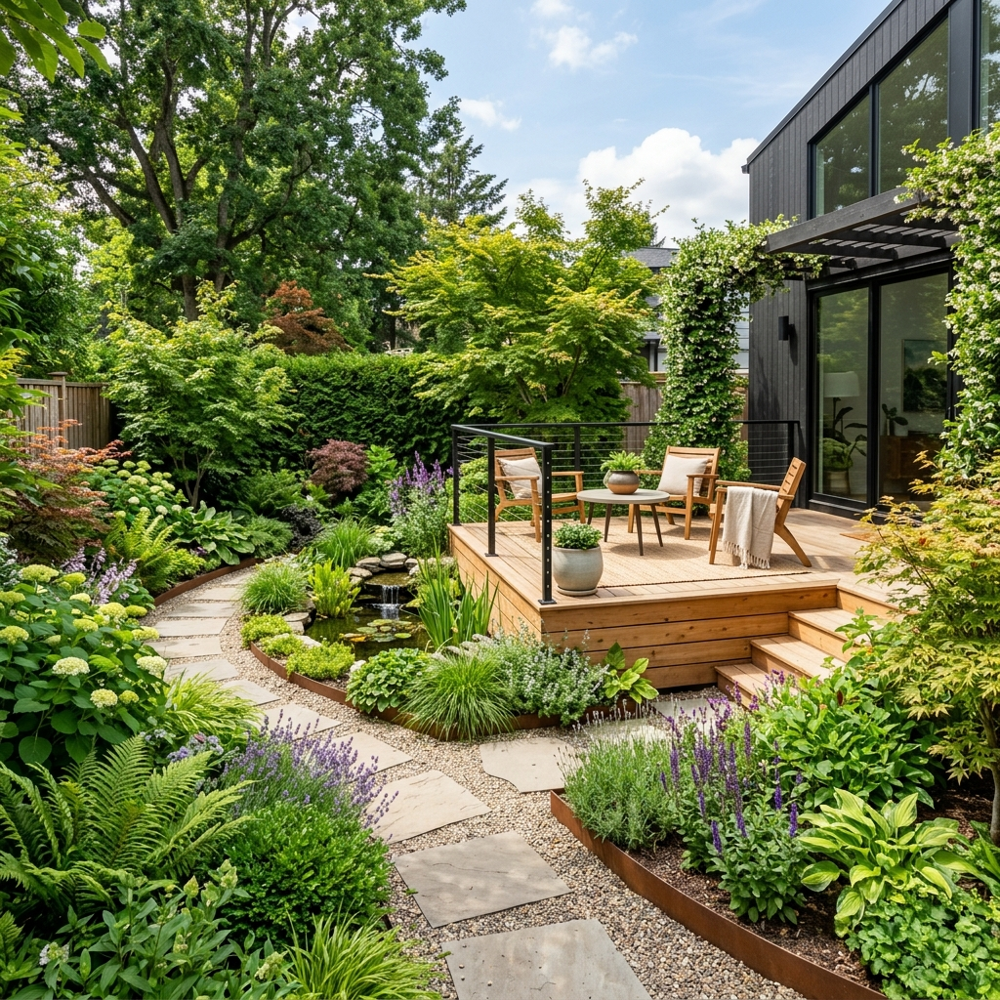
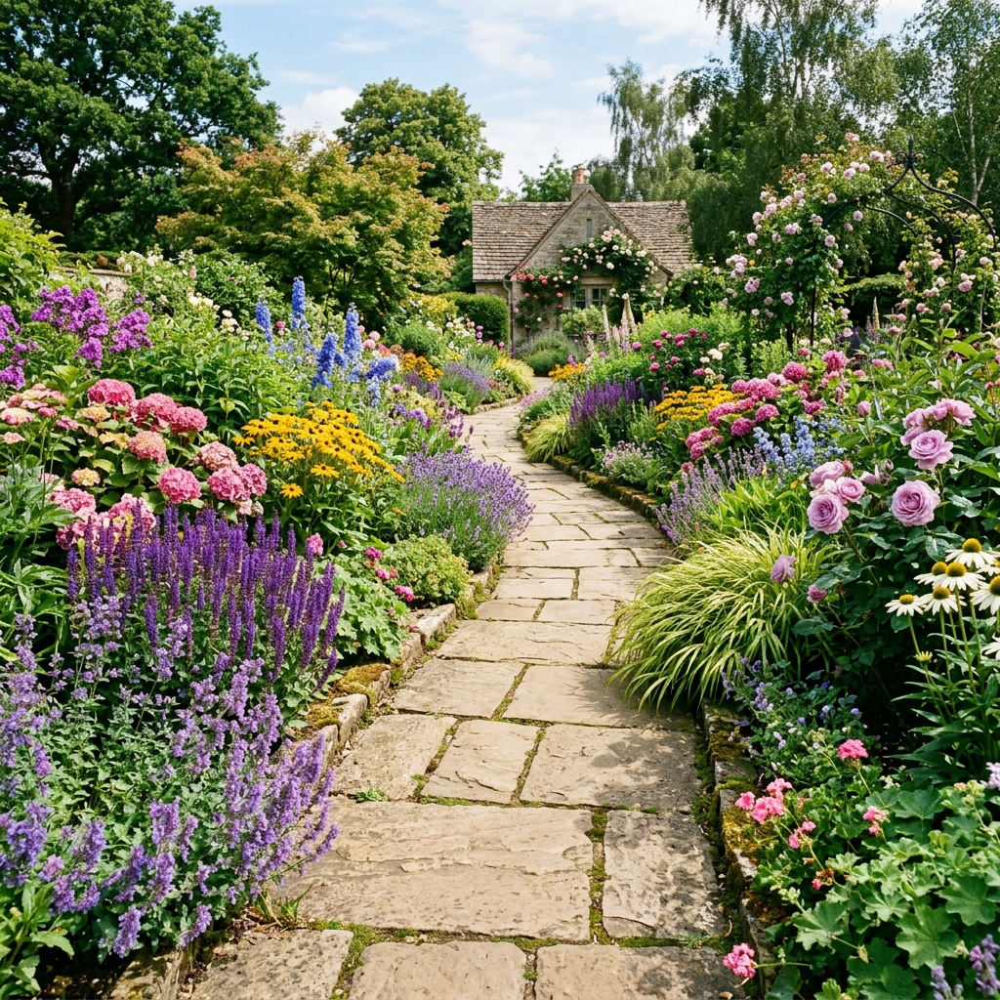
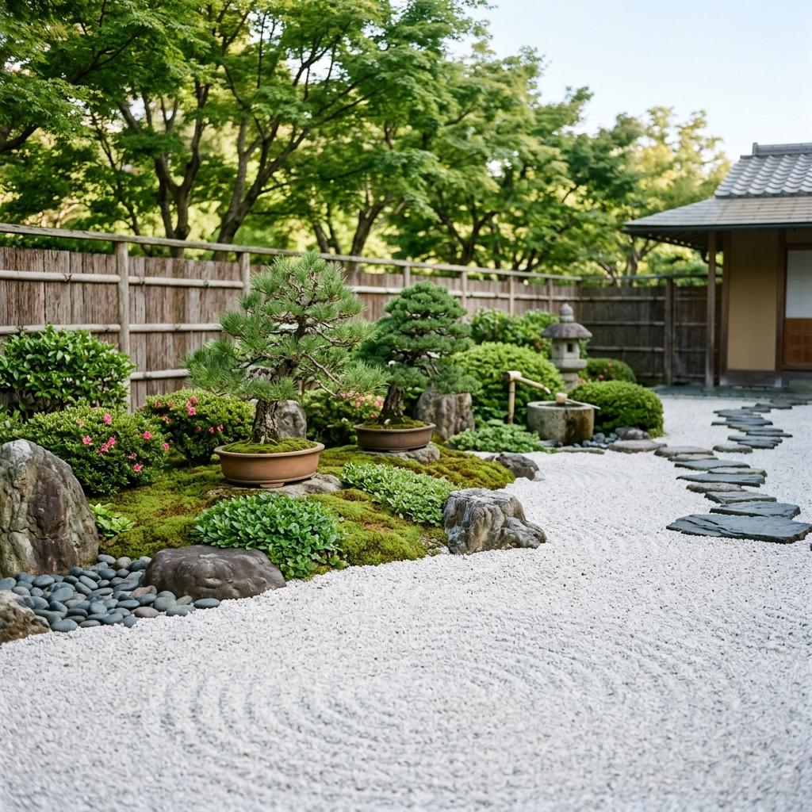

Création, aménagement et entretien écologique d'espaces verts. Un savoir-faire artisanal au service de la nature.
Discutons de votre projet
Des prestations adaptées à la vie de vos sols et de vos plantes.
Dessin de plans sur mesure, choix de végétaux endémiques et création de massifs harmonieux adaptés à votre terrain.
Tonte raisonnée, taille douce des arbustes, gestion des sols sans intrants chimiques. Laissons la nature reprendre ses droits.
Terrassement léger, création de murets en pierre sèche, pose de pas japonais et réalisation de clôtures en bois naturel.
Chaque jardin raconte une histoire. Voici comment nous écrivons la vôtre.
Nous venons sur place pour observer la qualité de votre sol, l'ensoleillement et les contraintes naturelles. Nous discutons de vos envies autour d'un café pour comprendre comment vous vivez votre extérieur.
Fini les rendus 3D froids. Nous travaillons avec des croquis faits à la main, des nuanciers de couleurs naturelles et des planches botaniques pour vous projeter de manière sensible dans votre futur jardin.
Le chantier est réalisé par notre petite équipe d'artisans passionnés. Nous privilégions les matériaux locaux (bois de nos forêts, pierre de carrière voisine) et le travail manuel respectueux des écosystèmes en place.
Des espaces vivants, imparfaits, magnifiques.



Racontez-nous votre projet de jardin, vos rêves de potager ou d'oasis fleurie. Nous serons ravis d'y répondre.
Nous écrire un mot